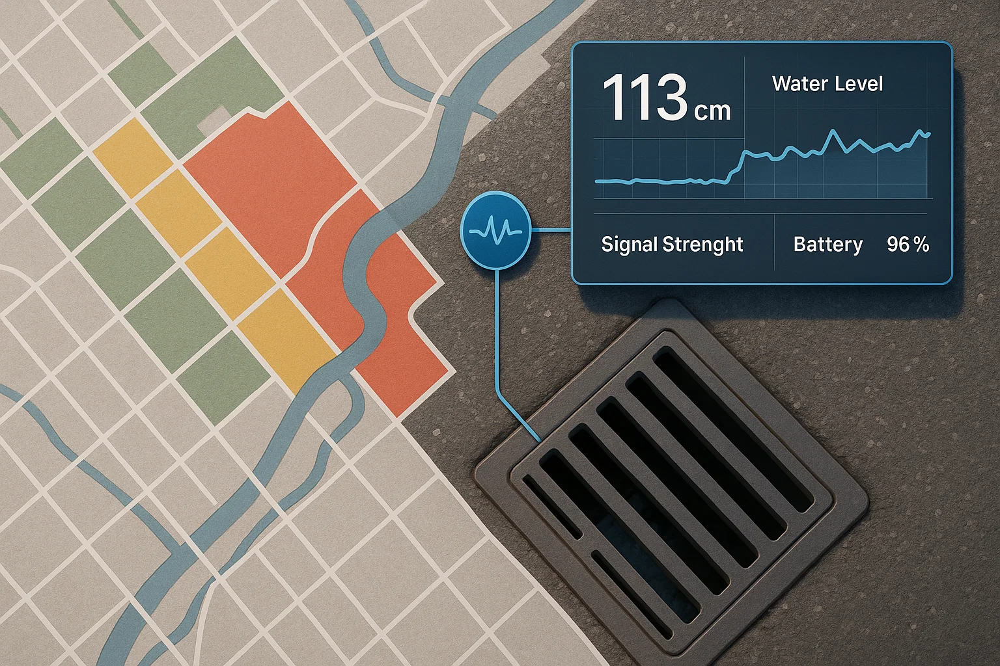

Uma iniciativa que usa tecnologia simples para prever grandes problemas: enchentes em áreas urbanas.
O EcoDrain surgiu como uma proposta acadêmica voltada à prevenção de desastres urbanos. A ideia foi simular, de forma acessível e educativa, como sensores de baixo custo podem ser usados para monitorar o nível de água da chuva em bueiros e gerar dados cruciais para ações da Defesa Civil.
Ao invés de combater o problema depois que ele acontece, nosso projeto aposta na prevenção. Com informações em tempo real sobre o acúmulo de água, é possível identificar áreas de risco antes que a enchente aconteça, evitando tragédias, prejuízos e até perdas humanas.
Embora seja uma simulação, o projeto tem um forte potencial de aplicação real, especialmente em cidades brasileiras que enfrentam alagamentos recorrentes.
